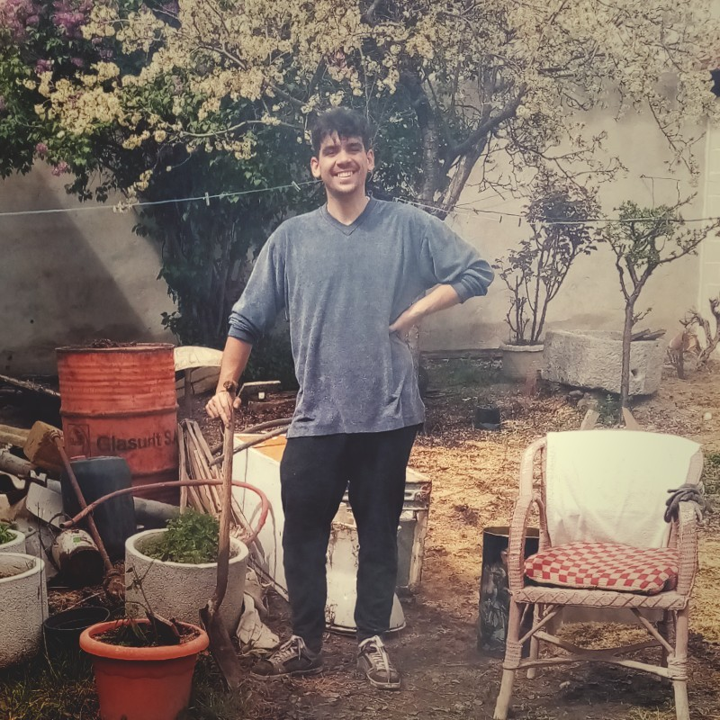

Hello there! Thanks for getting in here. My name is Luis, and this is the best way I found to tell my story without you falling asleep while reading it. Follow me on a journey through my favourite places in the earth
Back in 1995, my parents decided to make my first commit in Segovia, and I spent there the first 17 years of my life. Such a lovely city.

Location: Santiuste de San Juan Bautista. The place where my grandparents lived, my second home